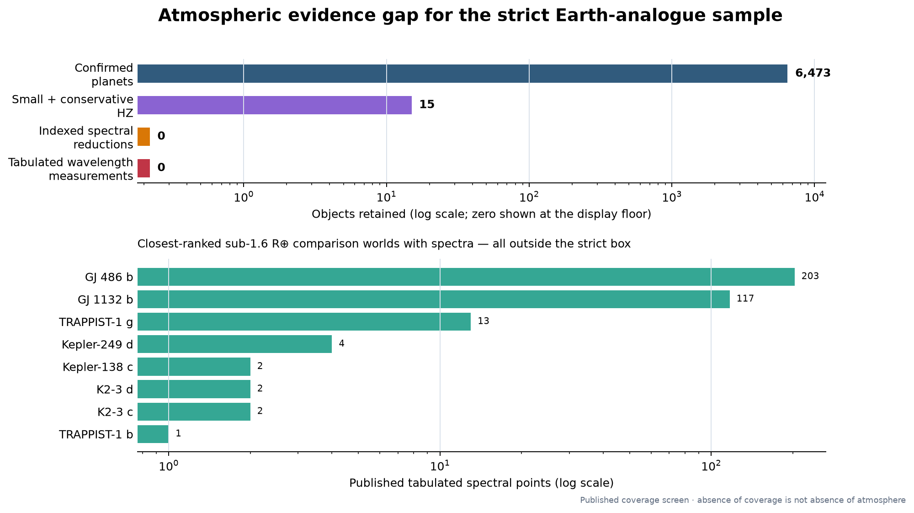
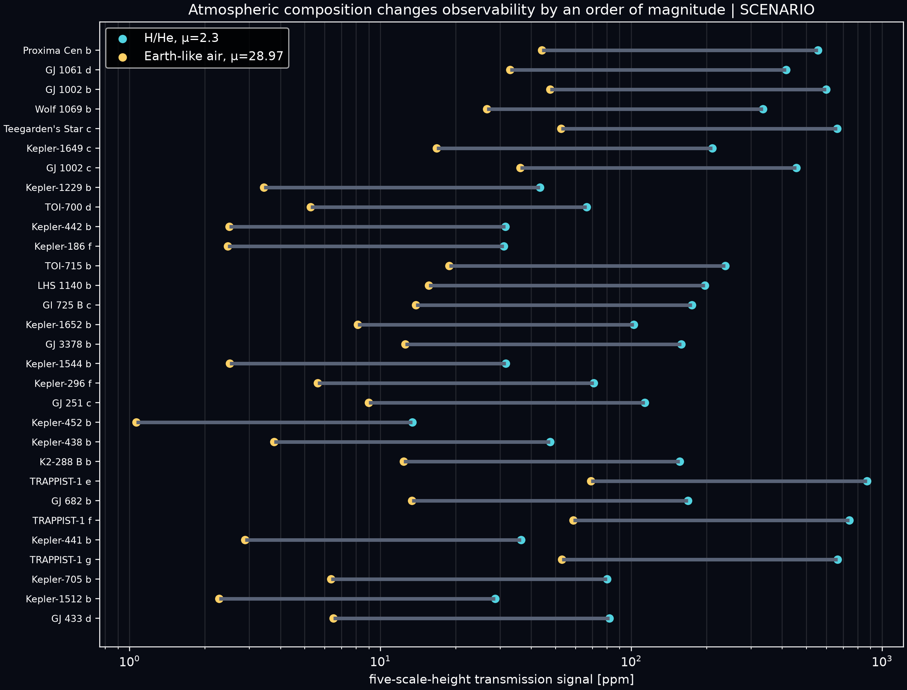

Dr25 droplist inv
SHA-256, LF-normalised text
5d4d3da5e774b2c53a683efdbc5b495da130d7f84911bd7efa57dd8409a7007bBrowse 30 versioned evidence files. Table previews simply display stored rows. Consult the project report for the source, processing steps, and inference assumptions.


5d4d3da5e774b2c53a683efdbc5b495da130d7f84911bd7efa57dd8409a7007b4eba449d5dbf006ff31463af4f81fd34e651b88aa9a06e47d2695efffa99862e34ed3014e528af86bb6192b2ce85e3be55e1ddf3de2befb8e8d2b8659838e1b9bb1b647bcf8d70b1d5456db7db980a3211b15a7aebdc47846197d8c2ed0136ea8570d47bc8ba41b4e76ce28daf1134fda265866f019bfd2f8e4b5183c3e3ee5891b0eead6555fe691dfdb437c3da3c0af355e8eb80f14ab85aaa0cefd9f6d6cdff7ba879caacc4e12c0ce147963fa1001ebfc7ceb34d20132749408b2013f5a64fe79d8c2682398f60a2476ad500b4f61250d3a4328eaa2be28d4389619835af7376087eee5524bbf3caaaefe4de036a0d5fa37e87c82bd24d10d92abc38619cdc920cfe77d948e0fb01c6d1f91115fe572151e683dd900b9346f2375dc56a2cfd9c9bdbae052c726fcdc3b2fc3f0809c7b79fa5dec45a831e39b8cce785346f6aec7a0529693b5f68c8ea9bb0403c01233b12b335d2f8adf6e971e6b722818ac49952e1ee62d9a2dfa398f4b54d5289584c212cd330ee9c04fcd78357c362fb| query_name | resolved_name | system_name | n_stars_in_system | n_planets_in_system | match_method | match_confidence |
|---|---|---|---|---|---|---|
| TRAPPIST-1 e | TRAPPIST-1 e | TRAPPIST-1 | 1 | 7 | alias_service | high |
| TRAPPIST-1 f | TRAPPIST-1 f | TRAPPIST-1 | 1 | 7 | alias_service | high |
| TRAPPIST-1 g | TRAPPIST-1 g | TRAPPIST-1 | 1 | 7 | alias_service | high |
| GJ 1061 d | GJ 1061 d | GJ 1061 | 1 | 3 | alias_service | high |
65766a85e53516ed66805fed3c693f9730200dfc55aa79f8582fde02f0353a67| pl_name | hostname | pl_letter | is_control | earth2_rank | earth2_index | rankable |
|---|---|---|---|---|---|---|
| Proxima Cen b | Proxima Cen | b | False | 1 | 0.8762299550846573 | True |
| GJ 1061 d | GJ 1061 | d | False | 2 | 0.8754771428552129 | True |
| GJ 1002 b | GJ 1002 | b | False | 3 | 0.8488580251900342 | True |
| Earth | Sun | True | 0.848411446561805 | True |
ad17324b070d1a9bf8289fae04ffb2002c0bbb5aeaf8bd912d87b1b1b5b32e54| quantity | column | n_with_value | pct_with_value | uncertainty_applicable | n_with_uncertainty | pct_with_uncertainty |
|---|---|---|---|---|---|---|
| Planet radius | pl_rade | 6316 | 99.21 | True | 4401.0 | 69.13 |
| Planet mass | pl_bmasse | 6335 | 99.51 | True | 3086.0 | 48.48 |
| Bulk density | pl_dens | 6222 | 97.74 | True | 1475.0 | 23.17 |
| Orbital period | pl_orbper | 6016 | 94.5 | True | 5521.0 | 86.73 |
8983d0cff088ba162cde1759363d6c1cf4360e67619de1332a5954a6f0fb546787a98d41664ec9089b7d580b77340159213880dfc3a50db1b949f8e8fa3d14c915683a25d2ba18be1429981e4a8d7bdf977aa3d8ba670c0d9e8b941b80b95dad3c0e8ec483cf43423c5a94bbe1a60c69ee2e7c803c336b79b37704b1b5836e3f3c323e12691cdfb0797fce7e5d7099727ff8cc4edae80ce74d943eaaff171de7a2c4b0b4c9bbc502db7bfd025858322fb8c99406fe00e9ff70f1ab21a1fb495d| query_name | resolved_name | system_name | n_stars_in_system | n_planets_in_system | match_method | match_confidence |
|---|---|---|---|---|---|---|
| TRAPPIST-1 e | TRAPPIST-1 e | TRAPPIST-1 | 1 | 7 | alias_service | high |
| TRAPPIST-1 f | TRAPPIST-1 f | TRAPPIST-1 | 1 | 7 | alias_service | high |
| TRAPPIST-1 g | TRAPPIST-1 g | TRAPPIST-1 | 1 | 7 | alias_service | high |
| GJ 1061 d | GJ 1061 d | GJ 1061 | 1 | 3 | alias_service | high |
65766a85e53516ed66805fed3c693f9730200dfc55aa79f8582fde02f0353a67| pl_name | hostname | pl_letter | is_control | earth2_rank | earth2_index | rankable |
|---|---|---|---|---|---|---|
| Proxima Cen b | Proxima Cen | b | False | 1 | 0.8764112843912955 | True |
| GJ 1061 d | GJ 1061 | d | False | 2 | 0.8754954151121703 | True |
| GJ 1002 b | GJ 1002 | b | False | 3 | 0.8488849518792323 | True |
| Earth | Sun | True | 0.848411446561805 | True |
4ecf046f2906235a756819eef3c9c39fe531814071824746c9e1cc3859632929| quantity | column | n_with_value | pct_with_value | uncertainty_applicable | n_with_uncertainty | pct_with_uncertainty |
|---|---|---|---|---|---|---|
| Planet radius | pl_rade | 6304 | 99.21 | True | 4395.0 | 69.17 |
| Planet mass | pl_bmasse | 6323 | 99.51 | True | 3078.0 | 48.44 |
| Bulk density | pl_dens | 6212 | 97.77 | True | 1470.0 | 23.14 |
| Orbital period | pl_orbper | 6009 | 94.57 | True | 5515.0 | 86.8 |
f01e97179e051480cc28e711bc299840e3bcadc436544229e51f1601a26ec8fa559f13588f8538da9f83c8b9dce7e29cd58b8263cfc79214848cd44d2a7f46a17df9986353e81e601b56168465d364468e9c185b9a9ce657943af21281e585712f6647987d5546d720ee6565cd7bfc52e4563b492194cdd2574f230489211ce75a4c5fe77ed4c748cbaaee010143e4f6efb38ac1b0cab4aea96cc7a2422bcd23bbf26578525af82555f226836377a3a4e53f99c9c95ed0e3753130df7952565549e3d22650a6381ea06aff068ac5e50b7f766649dd3d815bb45fb4da0a8852dfSHA-256 values verify the stored files. They do not independently validate the scientific analysis. Rebuild this page with python scripts/evidence_catalog.py followed by python scripts/render_evidence_page.py.